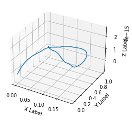

Direct and Indirect Control for Satellites
Owen Oertell
Overview
- Direct Control
- Indirect Control
- Combined Approach
- Conclusion
Direct Control
- Direct control relies on a circular approxomation of the orbit.
- Let $\Phi_{i,j}$ be a state transition matrix that models the (approxomated circular) orbit of
the satellite from time $i$ to $j$.
- $\Phi$ is determined by the solution to the Clohessy–Wiltshire equations
Direct Control cont.
- This can be represnted by $$F(x_0, \mathbf{u}) = x_{t_0} + \sum_{i=0}^t
\Phi_{i,i+1}\mathbf{u}_i$$
- Where $\mathbf{u}_i$ is a vector representing the control at time step $i$. The final position
after
control is $F(x_0, \mathbf{u})$.
Direct Control: Minizmation
- To minimize wrt. fuel usage, we seek must solve: \[ \begin{equation*}
\begin{aligned}
\min_{\mathbf{u}} \quad & ||\mathbf{u}||^2 \\
\textrm{s.t.} \quad & F(x_0,\mathbf{u})\le \epsilon \\
& \forall \mathbf{u}_{i,j}, \mathbf{u}_{i,j} \le m
\end{aligned}
\end{equation*}\] for some maximum thrust in a single direction $m$ and
threshold distance between the target and actual $\epsilon$.
As a Linear Program (LP)
- Solving this as a LP is a little trickier and some approxmations are made.
- This can be rewritten as: \[ \begin{equation*}
\begin{aligned}
\min_{\mathbf{u}} \quad & ||\mathbf{u}|| \\
\textrm{s.t.} \quad & \mathbf{\Phi U} + x_0 \ge -\epsilon \\
& \mathbf{\Phi U} + x_0 \le \epsilon \\
& \mathbf{U} \ge -\mathbf{M} \\
& \mathbf{U} \le \mathbf{M} \\
\end{aligned}
\end{equation*}\]
In the previous equation, $\mathbf{\Phi}$ was a vertical stack of $\Phi$, $\mathbf{U}$ was a vertical
stack of $\mathbf{u}$, and $\mathbf{M}$ was a vertical stack of $m$.
Indirect Control: Examples
- Solving this as an LP is signficantly faster, taking less than 0.1 seconds versus around 30
seconds with convex optimization although both produced similar results.

Direct Control: Assumptions
- We assume a circular orbit around the earth.
- We do not take into account higher order motion effects.